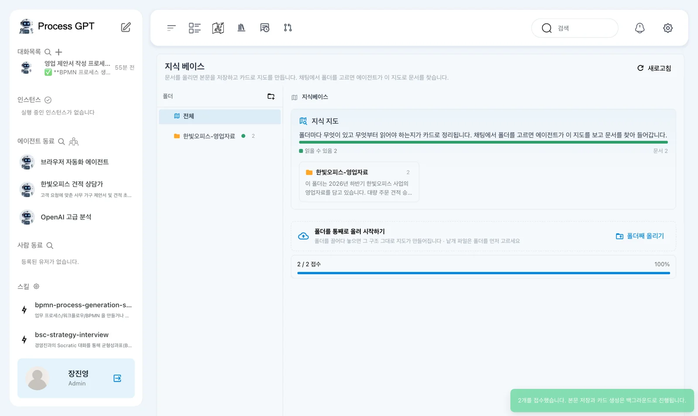
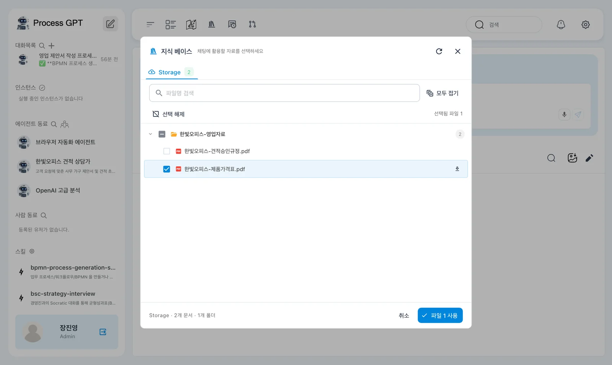
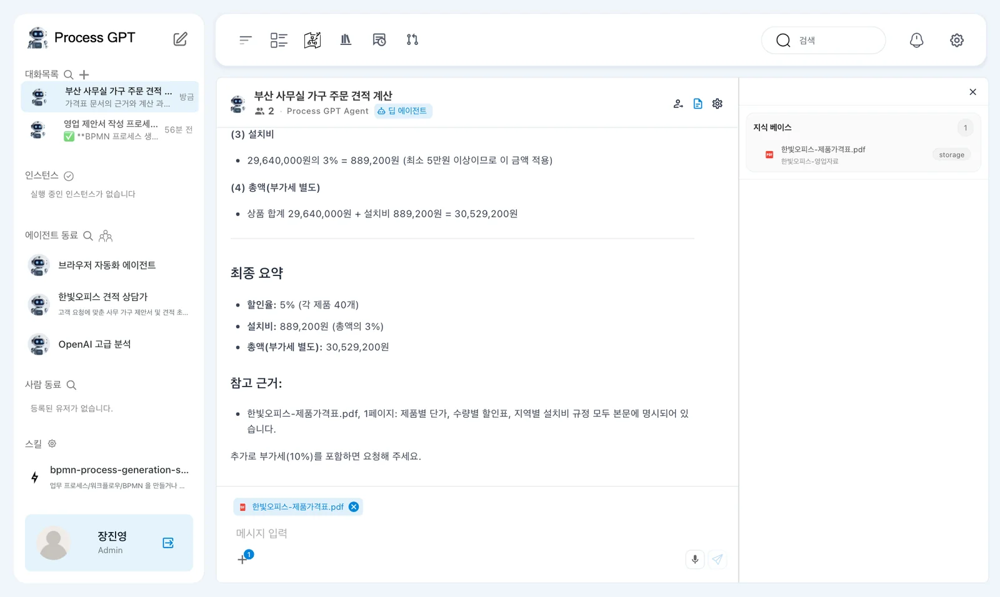
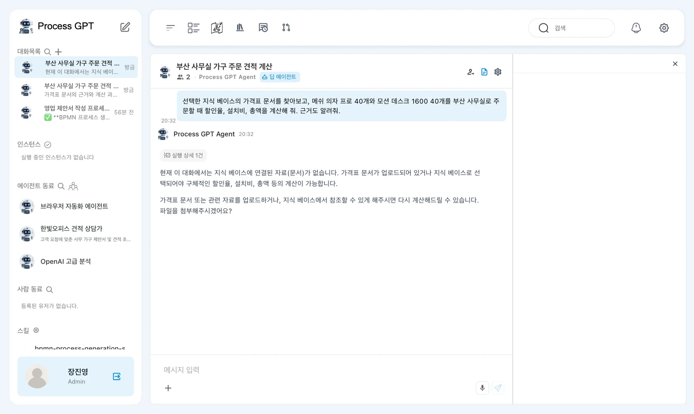

한빛오피스의 제품 가격표와 견적 승인 규정을 지식 베이스에 폴더째 올리고, 채팅에서 가격표를 골라 견적을 물으면 Process GPT가 문서의 표와 규정을 근거로 계산합니다. 고르지 않고 물으면 무엇이 달라지는지도 봅니다.
왜 지식 베이스인가#
AI에게 “메쉬 의자 프로 40개면 얼마야?”라고 물어도, 한빛오피스의 가격과 할인 기준을 모르면 답할 수 없습니다. 아는 척 지어내는 답은 더 위험합니다. 지식 베이스는 회사 문서를 올려 두는 곳이고, 채팅에서 그 문서를 고르면 에이전트가 문서를 찾아 읽고 그 내용을 근거로 답합니다.
| 지식 베이스 없이 | 지식 베이스와 함께 |
|---|---|
| 회사 가격·규정을 모름 → 자료를 달라고 하거나 일반론 | 고른 문서의 표·조항을 찾아 계산하고 출처를 밝힘 |
| 문서를 매번 채팅에 붙여야 함 | 한 번 올려 두면 누구나 골라 씀 |
실습 파일#
한빛오피스 영업자료(zip)를 내려받아 압축을 풉니다. 한빛오피스-영업자료 폴더 안에 두 문서가 있습니다.
| 문서 | 내용 |
|---|---|
| 한빛오피스-제품가격표.pdf | 제품 6종의 1개 가격·납기, 수량 할인(20~49개 5% 등), 지역별 설치비 |
| 한빛오피스-견적승인규정.pdf | 대량 주문 견적의 접수 → 재고 확인 → 견적 산출 → 금액별 승인 → 회신 순서(12장에서 씁니다) |
지식 베이스가 받는 형식은 PDF, HWP, HWPX, DOC, DOCX, PPTX, TXT, CSV, XLSX입니다.
따라 하기 1 — 폴더째 올리기#
- 위쪽 막대의 「지식 베이스」(책 모양)를 누릅니다.
- 「폴더를 통째로 올려 시작하기」 칸의 「폴더째 올리기」를 누르고, 압축을 푼
한빛오피스-영업자료폴더를 고릅니다. 폴더를 그 칸에 끌어다 놓아도 됩니다. - “2개를 접수했습니다. 본문 저장과 카드 생성은 백그라운드로 진행됩니다.”가 뜹니다. 잠시 뒤 오른쪽 위 「새로고침」을 누르면 왼쪽 「폴더」에
한빛오피스-영업자료가, 오른쪽 지식 지도에 「읽을 수 있음 2」와 폴더 카드가 보입니다.

지식 지도의 폴더 카드에는 폴더에 무엇이 있는지 AI가 읽고 쓴 요약이 붙습니다. 에이전트는 이 지도를 보고 어느 문서부터 읽을지 정합니다.
낱개 파일은 폴더를 먼저
파일 하나만 올리려면 왼쪽 「폴더」에서 폴더를 먼저 고른 뒤 올립니다. 지원하지 않는 형식(예: .md)이 섞여 있으면 “지원하지 않는 형식 1개 제외”처럼 알려 주고 나머지만 올립니다.
따라 하기 2 — 가격표를 골라 묻기#
- 홈(연필 아이콘)의 채팅 상자에서 ＋ › 「지식 베이스」를 누릅니다. 「채팅에 활용할 자료를 선택하세요」 창이 뜹니다.
- 「모두 펼치기」를 누르고
한빛오피스-제품가격표.pdf에 체크한 뒤 「파일 1 사용」을 누릅니다. 채팅 상자 위에 파일 이름 칩이 붙습니다. - 에이전트는 「딥 에이전트」 그대로 두고 아래처럼 묻습니다.

선택한 지식 베이스의 가격표 문서를 찾아보고, 메쉬 의자 프로 40개와 모션 데스크 1600 40개를 부산 사무실로 주문할 때 할인율, 설치비, 총액을 계산해 줘. 근거도 알려줘.
실습에서는 약 25~39초 뒤 이런 답이 왔습니다.
| 항목 | 답 | 가격표의 근거 |
|---|---|---|
| 1개 가격 | 메쉬 의자 프로 260,000원, 모션 데스크 1600 520,000원 | 1. 제품 가격 |
| 할인율 | 5% (각 40개 → 20~49개 구간) | 2. 수량 할인 |
| 할인 후 금액 | 29,640,000원 | |
| 설치비 | 889,200원 (부산 = 서울·경기 밖 → 할인 후 금액의 3%, 최소 5만 원보다 큼) | 3. 설치비와 배송 |
| 총액 | 30,529,200원 (부가세 별도) |

오른쪽 패널의 「지식 베이스」에는 이번 답에 쓴 문서가 보입니다. 직접 계산해 보면(260,000×40 + 520,000×40 = 31,200,000원 → 5% 할인 → 29,640,000원 → 3% 설치비 889,200원) 답과 같습니다.
「선택한 문서를 찾아보고」라고 말하세요
문서를 골랐어도 질문이 짧으면 에이전트가 문서를 찾지 않고 자료를 달라고 되묻는 경우가 있습니다. 질문 앞에 “선택한 지식 베이스의 ○○ 문서를 찾아보고”를 붙이면 문서를 먼저 읽습니다.
따라 하기 3 — 고르지 않고 같은 질문#
새 대화(연필 아이콘)에서 지식 베이스를 고르지 않고 같은 질문을 보내 봅니다.

“지식 베이스에 아직 자료가 선택되어 있지 않아 가격표 문서를 찾을 수 없습니다.”라며 자료를 올리거나 골라 달라고 합니다. 회차에 따라 올려 둔 문서도 「가격표 문서가 등록되어 있지 않아」 확인할 수 없다고 잘못 말하기도 합니다. 문서를 올려 두었어도 채팅에서 고르지 않으면 쓰지 못한다는 뜻이니, 가격표 파일을 골라 다시 묻습니다.
폴더째 고르기
선택 창에서 파일 대신 폴더에 체크하면 「폴더 1 사용」이 되지만, 현재 버전에서는 폴더 선택이 에이전트에게 전달되지 않아 문서를 찾지 못합니다. 폴더를 펼쳐 파일에 체크하세요.
다음 장으로#
가격표를 근거로 계산하는 일은 매번 반복됩니다. 다음 장에서는 이 일을 맡을 AI 동료 「한빛오피스 견적 상담가」를 조직도에서 만듭니다(9장).
확인 문제
- 지식 베이스에
가격표.md를 올렸더니 「지원하지 않는 형식」이라고 나왔습니다. 어떻게 하나요? - 같은 질문에 지식 베이스를 골랐을 때와 고르지 않았을 때 답이 어떻게 달랐나요?
- 회의 테이블 8인 10개를 서울 본사로 주문하면 총액은 얼마일까요? 지식 베이스에 묻고, 가격표로 직접 계산해 맞춰 보세요.
답
- PDF·DOCX·TXT 등 지원하는 형식으로 바꿔 올립니다. 문서 편집기에서 PDF로 저장하거나, 내용을 .txt로 저장하면 됩니다.
- 고르면 가격표의 표와 규정을 찾아 할인율 5%, 설치비 889,200원, 총액 30,529,200원을 근거와 함께 냈습니다. 고르지 않으면 문서를 찾지 못해 자료를 요청했습니다. 문구는 달라도, 올려 둔 문서를 채팅에서 골라야 쓸 수 있다는 점은 같습니다.
- 1,150,000원 × 10 = 11,500,000원, 10개는 할인 없음(0%). 서울은 배송·설치 무료지만 회의 테이블은 지역과 관계없이 1개당 설치비 30,000원 → 300,000원. 총액 11,800,000원(부가세 별도).